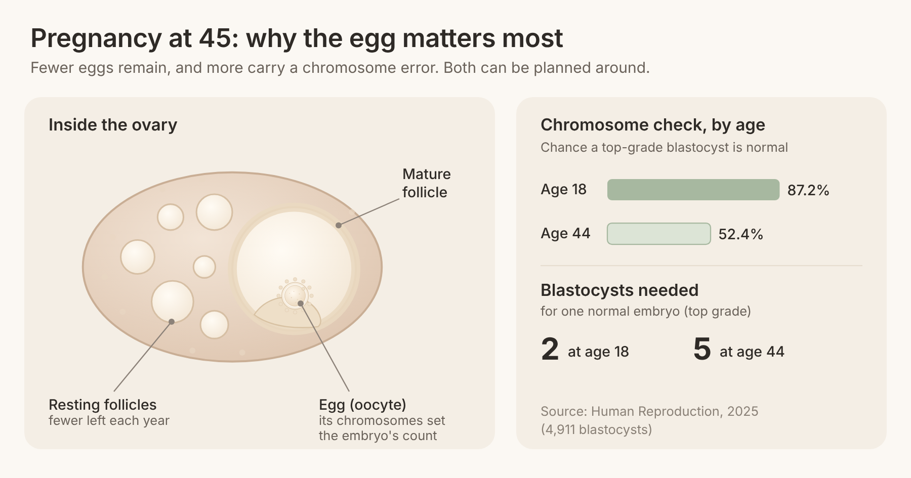
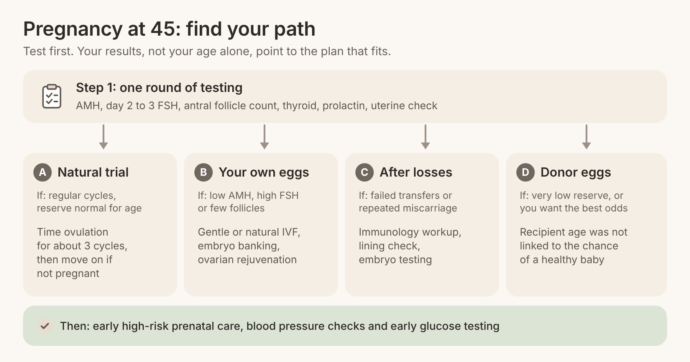

Quick answer: Pregnancy at 45 is possible, and women reach it every year through natural conception, IVF with their own eggs, ovarian rejuvenation or donor eggs. Your chance of pregnancy at 45 depends far less on the number 45 than on your own situation: how many eggs you still make, whether you have had losses or failed transfers, and whether you are open to donor eggs. The right first step is testing, so you can see which of the four paths below fits you.
In this article
Most articles about pregnancy at 45 give a single average and stop there. That is why so many women write things like "everything I have read on google seems so bleak." An average blends together women with very different bodies and very different options.
Two women can both be 45 and face completely different questions. One still has a regular cycle and wants to know how long to try on her own. Another has a very low anti-Müllerian hormone (AMH) level, the blood test that reflects how many eggs are left, and wants to know if her own eggs can still work. A third has had two failed IVF transfers. A fourth is ready to talk about donor eggs.
Age does change the biology. Eggs at 45 are fewer, and more of them carry the wrong number of chromosomes, which is the main reason implantation and early pregnancy become harder. But difficulty is not the same as a verdict. Each challenge has a matching treatment, and that is what this guide lays out, scenario by scenario.
A note on the numbers: every figure below comes from a published study or guideline, linked where it appears. These are group averages, not your personal prognosis. Your own tests are what turn them into a plan.
If you still ovulate every month, natural conception is possible, and some women do conceive this way at 45. One woman on a fertility forum described herself this way: "I still have regular periods that have never changed." That is a real advantage, and it is worth using well.
The American Society for Reproductive Medicine (ASRM) notes that relative fertility is already about half at 40 compared with the late 20s and early 30s. In a classic study of a population that did not use contraception, the average age at a woman's last pregnancy was just under 41. So pregnancy at 45 naturally does happen, but time matters more than it did at 35.
The same ASRM opinion recommends a fertility evaluation after 6 months of trying for women 35 and older. At 45, we suggest testing at the start rather than waiting, so you know whether trying alone makes sense.
Get a baseline workup: AMH, follicle-stimulating hormone (FSH) on day 2 to 3, an antral follicle count by ultrasound, thyroid and prolactin. Our guide to what a fertility workup includes walks through each test.
Time intercourse to ovulation with ovulation kits, every one to two days in the fertile window.
Set a short deadline. If you are not pregnant after about 3 cycles, or if testing shows low reserve, move to Scenario B so the eggs you have now are not lost to waiting.
If your periods are changing, our post on getting pregnant during perimenopause explains how to read those shifts.
Many women ask the question one forum member posted: "Has anyone had success after 45 with own eggs?" The answer is yes. It is harder, it often takes more than one egg retrieval, and the protocol needs to be built for a low egg count.
A study of 1,078 own-egg IVF cycles in women 45 and older found a clinical pregnancy rate of 9.6% and a live birth rate of 3.4% per embryo transfer. Most of those babies were born to women who were 45, and none came from cycles where 4 or fewer eggs were retrieved. That last finding is the useful one: the number of eggs you can collect is what moves your odds, so the goal is to collect more eggs over time.
Gentle or natural IVF cycles. High doses of stimulation drugs rarely make a low-reserve ovary produce many more eggs. Our three types of IVF (natural, mini and conventional) let us match the protocol to what your ovaries can do. Read more on natural IVF for women over 35.
Embryo banking. Several back-to-back retrievals can build a group of embryos before any transfer, which addresses the low per-cycle numbers above.
Ovarian rejuvenation. PRP and adipose-PRP ovarian rejuvenation is designed to support a low-reserve ovary. A 2025 report in the American Journal of Stem Cells described the first live births after adipose-PRP in two women aged 45 and older: a 46-year-old who conceived naturally six months later and gave birth at 47, and a 45-year-old who conceived by frozen embryo transfer.
Egg quality support. Our post on improving egg quality after 40 covers the supplements and habits with the best evidence.
If your FSH is high, our guide to fertility treatment for high FSH explains why more medication is often not the answer.
Some women at 45 have already been through IVF elsewhere, or have had more than one miscarriage. One forum member wrote, "I'm scared of getting news that I don't want to hear." That fear is understandable, and it usually means the next cycle needs a different plan, not the same plan repeated.
Miscarriage risk does rise with age. A BMJ study of 421,201 pregnancies found the risk was lowest at ages 25 to 29 (10%) and reached 53% at 45 and over. Most of that rise comes from chromosome errors in the egg, but not all of it. Immune factors, chronic inflammation of the uterine lining (chronic endometritis) and endometriosis can also stop a healthy embryo from implanting or growing.
A reproductive immunology workup. RFC offers reproductive immunology and endometriosis care for exactly this pattern. Our post on the role of immunology in IVF explains what is tested.
Checking the lining. Testing for chronic endometritis and treating it before transfer can remove one hidden barrier.
Testing embryos for chromosomes. Preimplantation genetic testing for aneuploidy (PGT-A) helps you transfer the embryo most likely to implant, which can mean fewer losses.
Reviewing what went wrong. Our guide to repeated IVF failure lists the causes worth ruling out.
For some women, the path to pregnancy at 45 runs through donor eggs, and that is a strong path, not a fallback. Another forum member put the hesitation honestly: "They offer the donor IVF which I do not really want to try." Many women start there and come around once they see the numbers, and many others choose their own eggs first. Both choices are valid.
The reason donor eggs work so well at 45 is simple: the egg's age, not the uterus's age, drives most of the drop in success. In a national study of US donor egg cycles published in JAMA, the yearly number of donor egg cycles rose from 10,801 to 18,306, and the recipient's age was not associated with the chance of a healthy full-term baby.
RFC's donor egg program reports a 95% egg thaw survival rate and an 82% clinical pregnancy rate. Our donor eggs procedure guide explains each step, from choosing a donor to embryo transfer. And because RFC has no age cutoff, you can also start with your own eggs and move to donor eggs later if you choose.
Across all four scenarios, the research points the same way: age makes each step harder, and every step has a treatment that answers it. The table below gathers the key numbers from the studies cited in this guide.
What was measured | At 44 to 45+ | Younger comparison | Source |
Miscarriage risk | 53% (45 and over) | 10% (ages 25 to 29) | BMJ, 2019 |
Chance a top-grade blastocyst is chromosomally normal | 52.4% (age 44) | 87.2% (age 18) | Human Reproduction, 2025 |
Top-grade blastocysts needed for one normal embryo | 5 (age 44) | 2 (age 18) | Human Reproduction, 2025 |
Live birth per transfer, own-egg IVF | 3.4% (45 and over) | not reported | J Assist Reprod Genet, 2017 |
Preeclampsia | 17.5% (45 and over) | 6.6% (ages 20 to 34) | BMC Pregnancy and Childbirth, 2025 |
Gestational diabetes | 19.0% (45 and over) | 8.5% (ages 20 to 34) | BMC Pregnancy and Childbirth, 2025 |
Preterm birth | 39.6% (45 and over) | 14.5% (ages 20 to 34) | BMC Pregnancy and Childbirth, 2025 |
The embryo numbers come from a 2025 Human Reproduction study of 4,911 blastocysts. It found that at age 44, a top-grade blastocyst has a 52.4% chance of being chromosomally normal, and you would need about 5 such blastocysts to expect one normal embryo. That is why banking embryos over several cycles helps women using their own eggs.

Once pregnant, care matters too. A 2025 study in BMC Pregnancy and Childbirth found higher rates of preeclampsia, gestational diabetes, cesarean birth and preterm birth in women 45 and older. These risks are well known to maternal-fetal medicine specialists, and closer monitoring, blood pressure checks and early glucose testing are how they are managed.
Women 40 and over are also a growing share of IVF patients. A national analysis in the Journal of Assisted Reproduction and Genetics found that US own-egg IVF cycles in women 40 and older rose from 8,672 to 28,883 between 1996 and 2013. You are far from alone in asking these questions.
Your test results, more than your birthday, decide which scenario you are in. This is the question most pages about pregnancy at 45 never answer, so here is how the main results usually steer the plan.
Regular cycles, AMH and antral follicle count in the expected range for your age, normal FSH: a short trial of natural conception with timing is reasonable, with testing already done so you can switch quickly.
Low AMH, few antral follicles or high FSH: move straight to a low-reserve plan, such as gentle or natural IVF, embryo banking, and a conversation about ovarian rejuvenation. Waiting costs eggs. Our post on how to boost AMH explains what can and cannot change the number.
Only 4 or fewer eggs per retrieval: this is when banking across several cycles and rejuvenation matter most, based on the study of 1,078 cycles above.
Two or more failed transfers of good embryos, or repeated miscarriage: add an immunology and uterine lining workup before the next transfer.
Very low reserve with no eggs collected, or a wish for the highest odds per transfer: donor eggs become the leading option, and they can be combined with your own-egg attempts.
One woman wrote, "I have seen some stories where people have had pregnancies at 44/45." Those stories are real. The women behind them usually had a plan matched to their own results, not an average.
The fastest way forward is one appointment that gives you real numbers and a plan. Here is what that looks like at RFC.
Book a consultation. Bring past test results and IVF records if you have them.
Complete testing in one cycle. AMH, day 2 to 3 FSH and estradiol, antral follicle count, thyroid, prolactin, and a uterine evaluation. A semen analysis for your partner if relevant.
Match your scenario. Natural trial, own-egg IVF with banking, rejuvenation, an immunology workup, donor eggs, or a combination.
Start treatment. Many women begin within the next cycle. Out-of-area patients can do monitoring locally and travel in for retrieval and transfer.
Plan the pregnancy. Arrange early prenatal care with a high-risk obstetrician, blood pressure monitoring and early glucose testing.
Questions worth asking any doctor at 45:
Based on my AMH and follicle count, how many eggs can I expect per retrieval?
Would a gentle protocol or banking several cycles suit me better than one high-dose cycle?
Am I a candidate for ovarian rejuvenation?
If I have had losses or failed transfers, which immune or uterine tests should I have first?
Is there an age or weight limit at your clinic? (At RFC, there is none.)

RFC's pricing page lists current fees for each path, and our why choose RFC page explains how we care for women other clinics have turned away.
It is lower than at 40 but real. One large study of IVF in women 45 and older found a live birth rate of 3.4% per transfer, with the best results when more than 4 eggs were retrieved. Gentle protocols, embryo banking and ovarian rejuvenation are used to improve the number of eggs and embryos you have to work with.
Yes, if you still ovulate. Fertility is lower than in your 30s, so testing at the start and setting a short timeline of about 3 cycles makes sense. If tests show low reserve, moving early to treatment protects the eggs you have now.
Lower than when you were younger, but not zero while you still ovulate. If you do not want a pregnancy, keep using contraception until menopause is confirmed, which means 12 months in a row without a period. If you do want a pregnancy, see a specialist rather than relying on chance.
It is considered higher risk, and it is managed with closer care. A 2025 study found higher rates of preeclampsia, gestational diabetes and preterm birth at 45 and over. Early prenatal care, blood pressure checks and glucose testing help keep you and the baby safe.
Yes. Success with donor eggs depends mainly on the donor's age, and a national JAMA study found the recipient's age was not linked to the chance of a healthy full-term baby. RFC's donor egg program reports an 82% clinical pregnancy rate.
No. Rejuvenating Fertility Center has no age cutoff and no weight cutoff. Your treatment plan is based on your tests and goals, not your birthday.
Pregnancy at 45 is harder than at 35, and it is very much possible. The women who get there usually have one thing in common: a plan built on their own test results, not on an average. Whether your path is natural conception, your own eggs, rejuvenation or donor eggs, there is a next step you can take this month.
At Rejuvenating Fertility Center, women in their mid-40s are not the exception; they are who we specialize in. Book a consultation and we will review your tests, map out your scenario, and show you every option that fits. If you live outside New York or Connecticut, you can monitor locally and travel to us for the key steps.